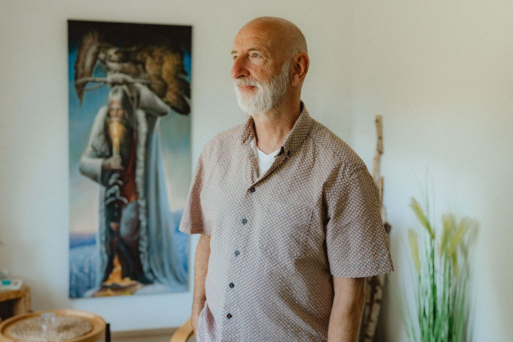

Zentrum für Lebensbegleitung und Naturheilkunde
Das Zentrum für Lebensbegleitung und Naturheilkunde wurde 2009 in Hildesheim-Itzum gegründet. 20XX erhielt ich den Ruf, das Zentrum nach Helgoland zu verlegen, den Ort, vor dem einst Atlantis gelegen hat. Davon bin ich zutiefst überzeugt. Ich erhielt dafür das letzte bebaubare Grundstück auf der Insel und bekam von der geistigen Welt den Namen Neu-Atlantis für mein Zentrum durchgesagt.
Heute ist Panten nahe Hamburg und Lübeck der neue Lebensmittelpunkt von meiner Frau Simone und mir. Die Naturheilpraxis auf Helgoland spielt jedoch immer noch eine wichtige Rolle.


Ralf Baars
HeilpraktikerFür mich ist wirklich alles, was uns im Leben begegnet, ein Wegweiser – und damit eine Möglichkeit, hinzuschauen und „Knoten“ aufzulösen, die uns daran hindern, das Leben zu führen, das wir uns wirklich wünschen. Gemeinsam finden wir den nächsten Schritt.
Warum ich mir da so sicher bin? Weil ich selbst viele Jahre durch eigene Erkrankung bis an den Klippenrand gekommen bin – und immer wieder dachte ‚noch weiter schaffe ich nicht‘. Doch erst, als ich wirklich auf Messers Schneide zwischen Leben und Tod stand und schon weit auf meinem Erkenntnisweg war, durfte sich mein Krankheitssymptom als Wegweiser auflösen. Mehr noch: Seitdem besitze ich einen inneren Sensor, der in meiner Arbeit sehr hilfreich ist.
Qualifikationen
✻Heilpraktiker für Psychotherapie ✻Ausbildung im Familienstellen bei Bert Hellinger ✻Weiterbildung in Quantenheilung ✻Weiterbildung in Heilhypnose ✻Weiterbildung in Rückführungstherapie ✻Weiterbildung in craniosacraler Körpertherapie ✻Weiterentwicklung des geistigen Familienstellens ✻Supervision für Interessierte im geistigen Familienstellen ✻Über 20 Jahre Erfahrung in der Lebensbegleitung in eigener Praxis u. v. m.Simone Lackner-Baars
EntspannungstrainerinKlientenstimmen
Die Intensivjourney (Intensivcoaching) war für mich eine wunderbar begleitete Reise zu mir, bei der ich die Tiefe meiner Seele kennenlernen durfte. Dank der intensiven Arbeit mit Dir ist es gelungen, schmerzvolle, belastende Themen loszulassen. Dein Angebot, diese Behandlung auf Helgoland durchzuführen, hatte für mich einen einmaligen Reiz, sie bot die Möglichkeit, mit ‚schwerem Gepäck‘ anzureisen und die Insel mit ‚leichterem Gepäck‘ wieder zu verlassen. Dieses Angebot habe ich genutzt und die Woche nur mir und meiner Heilung gewidmet, Ablenkungen habe ich stark reduziert. Neben den täglichen Sitzungen mit Dir, gehörten Spaziergänge und das Erkunden der Insel, die Robben beobachten oder einfach aufs brausende Meer schauen und sich den Wind um die Ohren blasen zu lassen, genauso dazu, wie Emotionen, die hochkamen, zuzulassen und Gedanken, Impulse zu notieren. Jede Sitzung bekam so ihre Zeit zu wirken und verarbeitet zu werden. Jeder Tag brachte neue Impulse, die in die Behandlung einfließen konnten. Die von Dir empfohlenen Übungen und Rituale konnte ich sehr einfach umsetzen, so dass ich viele Dinge loslassen konnte und bei der Abreise das Gefühl hatte, etwas hinter mir zu lassen und mit Blick nach vorne auf die Weite des Horizonts des Meeres in ein neues, friedvolleres Leben aufzubrechen. Ich kann dieses Angebot nur weiterempfehlen.
Ich habe schon einige gute Familiensteller erlebt und war von Ralfs Präsenz und seiner Intuition sehr beeindruckt. Er bringt Familienstellen von diesem Leben in andere Zeiten und mehrere Dimensionen und damit ins nächste Level. Daher löst sich in einem Wochenende so viel mehr als man sich vorstellen kann. Aber auch die Einzelsitzungen mit ihm sind ganz besonders. Er macht es einem ganz leicht, wieder in traumatisierende Situationen zu gehen und löst diese mit großer Klarheit auf. Unbedingt empfehlenswert.
Es ist durch die Arbeit mit dir eine große Kraft, Klarheit, Besonnenheit, Zuversicht, Einsicht, Mut eröffnet worden, die mich sehr stabil durch die nicht gerade leichter gewordenen Begebenheiten in meinem Leben tragen. Dafür von Herzen DANKE!
Ich bin 2018 über eine Freundin zur Aufstellungsarbeit mit Ralf gekommen. Zu dieser Zeit kannte ich Aufstellungen bereits und habe sie als ein wundersames Instrument zur Darstellung von Zusammenhängen, Verhältnissen und unserer verschiedenen Rollen in der Gesellschaft erlebt („Systeme“). Grundsätzlich bekommt man eine Einsicht in die hintergründigen/unterbewussten Gefühle und Gedanken der Beteiligten, die oft ehrlicher und ungefilterter sind, als wenn man Probleme oder Konflikte verbal von Angesicht zu Angesicht löst. Zumal wenn die/der Stellvertreter*In im Anschluss noch eine Rückmeldung geben kann. Oft führen die Einsichten schon zu einem besseren und nachsichtigeren Verhältnis zu der betreffenden Person oder es lösen sich Konflikte scheinbar von selbst oder die betreffende Person meldet sich nach X Jahren. Es ist auch immer wieder erstaunlich, wie Stellvertreter*Innen Sachverhalte „imitieren“, von denen sie eigentlich nichts wissen können. Ich habe zum Beispiel eine behinderte Schwester und in einer Aufstellung hat eine Person, die nicht mal wusste, dass meine Schwester behindert ist, die Behinderung 1 zu 1 imitiert (richtiges Bein, richtiger Gang etc.). All diese Erlebnisse lassen mich daran glauben, dass doch irgendwie alles mit allem zusammenhängt. Dies schließt den Bogen zu: Hier wird nicht mehr mit „Anliegen“, sondern nach Impuls gearbeitet, dadurch ist das Feld offener: Die Ursachensuche ist dann nicht mehr „nur“ auf das Familienproblem beschränkt, sondern kann sich ZEIGEN und ggf. gelöst werden. Dieses Feld der „ungeahnten Möglichkeiten“ hilft oft, wenn nichts mehr hilft (welcher Mensch denkt an Ahnenreihen oder Vorleben, wenn er z. B. Herzprobleme hat?). Nach meinem Empfinden finden in Ralfs Aufstellungen (und 1-zu-1-Sitzungen) großartige Seelenheilungen statt, die unsere Welt ein kleines bisschen besser macht. Denn jede Aufstellung dient nicht nur dem Impulsgeber, sondern auch der „großen“ Sache. Und ganz „nebenbei“ profitieren die Kursteilnehmer auch immer von Ralfs wedischem und systemischen Einsichten, die er in jedem Kurs teilt. Ich fühle mich auf jeden Fall gut aufgestellt und abgeholt 😉
„Ich kann es halten.“ Es waren nur vier Worte, doch sie veränderten vor ca. 15 Jahren mein Leben auf wundersame Weise. Als Ralf sie aussprach, stand ich ihm gerade das erste Mal persönlich gegenüber. Am Ende seines Spezialworkshops „Quantenheilung (RB)“ auf der Lebensfreude-Messe in Hamburg. Ich war eigens für diesen Workshop zur Messe gefahren. Was ich damals merkwürdig von mir fand. Heute weiß ich, warum. Viele Jahre war ich von einem Arzt, Heilpraktiker und Heiler zum anderen gerannt, hatte dieses und jenes ausprobiert und kurzfristig auch immer wieder Erleichterung erfahren. Doch wirklich tiefgreifend verändert hatte sich in meinem Leben nichts. Ich hatte Ängste und fühlte mich einsam, selbst wenn ich unter Freunden war. Ich hatte Allergien, die mich einschränkten, war permanent müde und empfand das Leben als anstrengend. Ich war auf der Suche und wusste nicht, wonach. Ich glaube, Ralf hatte und hat es nicht immer leicht mit mir. Ich war und bin eine Skeptikerin. Jemand, der für alles eine handfeste Erklärung braucht(e). Und dann stand ich das erste Mal selbst als Stellvertretung in einer Aufstellung und konnte spüren, dass ich ‚bewegt wurde‘. Von etwas, das Ralf Quantenfeld und Geistige Welt nannte. Das hörte sich irgendwie vertraut an. Vielleicht, weil mich die Quantenphysik schon seit Jahren faszinierte. Und dennoch war ich sehr erstaunt, als ich plötzlich Gefühle spürte und Bewegungsimpulse hatte, die ich mir nicht erklären konnte. Das Beste daran: Ich muss nichts können, nichts bewusst lernen, nur ich selbst sein. Mehr noch. Ralf gibt mir – und allen anderen Menschen, mit denen er zu tun hat – immer das Gefühl, wichtig und besonders zu sein. Die Abläufe seiner Seminare, aber auch persönliche Gespräche mit ihm, sind geprägt von aufrichtiger Wertschätzung und Authentizität. Und so empfinde ich tiefe Dankbarkeit für Ralfs Dasein und dafür, dass er sich der Aufgabe, Menschen in der Tiefe ihrer Seele auf ihrem Lebensweg zu begleiten, voll und ganz zur Verfügung stellt. Danke Ralf! Von Herzen.
Seminaradressen
Praxis Helgoland
Neu-Atlantis · Zentrum für Lebensbegleitung & NaturheilkundeGätkestraße 510m, 27498 Helgoland
Praxis Mölln
Neu-Atlantis · Zentrum für Lebensbegleitung & NaturheilkundeScharr 1, 23896 Panten (Ortsteil Hammer)
Alle Veranstaltungsorte findest du unter Kontakt.